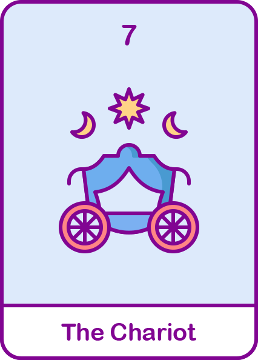

마차
강한의지와 책임감, 목표를 위한 수단과 방법을 가리지 않아요.
동시 진행이 가능한 추진력과 힘이 있지만 자기중심적일 수 있어요.

#전진
#책임감
#목표의식
현대해상
내 성격 타로카드 해석은?
정방향 해석
- 일을 동시에 진행할 수 있는 추진력이 좋고, 현실적이며 이성적이고 호불호가 명확한 사람입니다.
- 원하는 것을 이루기 위한 의지가 강하고 그것에 대한 두려움이 없이 수단과 방법을 가리지 않아요.
- 겉과 속이 일치하고 남들이 날 어떻게 생각하는지 신경 쓰지 않아요.
- 결과를 중요시 여기고 일을 좋아하며 머리가 좋아 일처리를 똑부러지게 잘해요.
역방향 해석
- 고집이 세고 자기중심적인 소통 방식으로 대화하며 위로를 잘 못해요.
- 지나친 목표 지상주의로 냉정하고 남들이 못하면 답답해하며 잔소리해요.
- 일을 좋아하고 결과를 중시하다보니 일 잘하면 착한사람, 일 못하면 나쁜 사람이라는 인식을 가지고 있어요.
- 여유로운 것 보다 차라리 바쁜게 낫다고 생각하는 사람이라 가끔 피로하고 지칠 수 있어요.
재미로 보는
내 타로카드의 재물운은?
재정적인 어려움이 있었다면 지금은 장애물을 극복할 수 있는 좋은 증조입니다!
열심히 일한 자에게 임금인상이나 재정적인 횡재를 기대해볼 수 있어요!
하지만 씀씀이가 크기 때문에 큰 지출에 주의해야합니다.
또한 돈에 관심이 많아 투자에도 관심이 많은 당신! 새로운 투자는 멈추고 이미 하고 있는 투자가 있다면 다시 한번 새롭게 검토 해보는 건 어떨까요?
열심히 일한 자에게 임금인상이나 재정적인 횡재를 기대해볼 수 있어요!
하지만 씀씀이가 크기 때문에 큰 지출에 주의해야합니다.
또한 돈에 관심이 많아 투자에도 관심이 많은 당신! 새로운 투자는 멈추고 이미 하고 있는 투자가 있다면 다시 한번 새롭게 검토 해보는 건 어떨까요?
보험 컨디션도 체크해보기! 가입한 보험을 확인하고
부족한 부분을 채워 보세요 현대해상